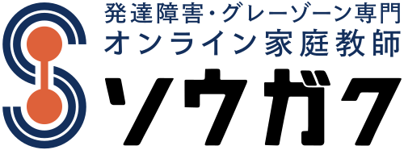
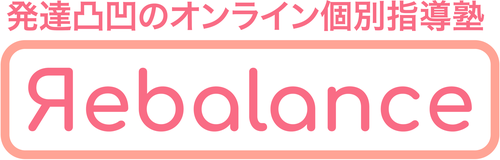
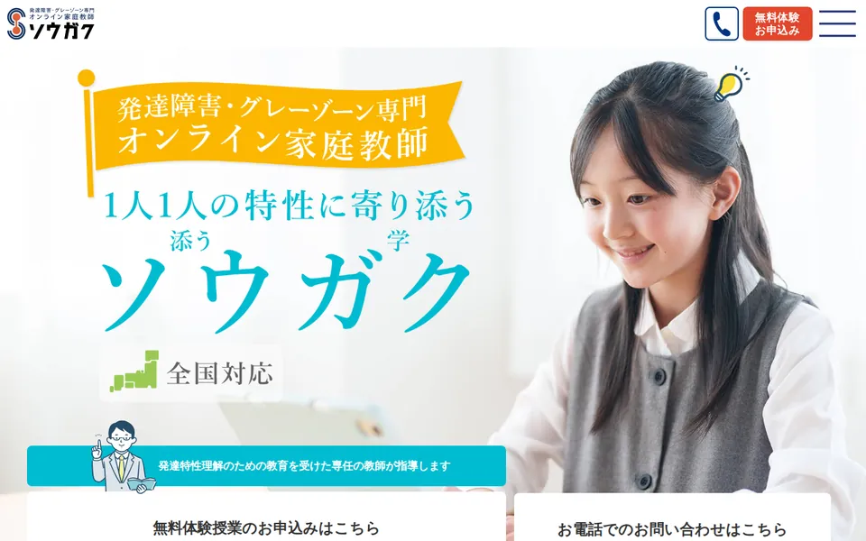
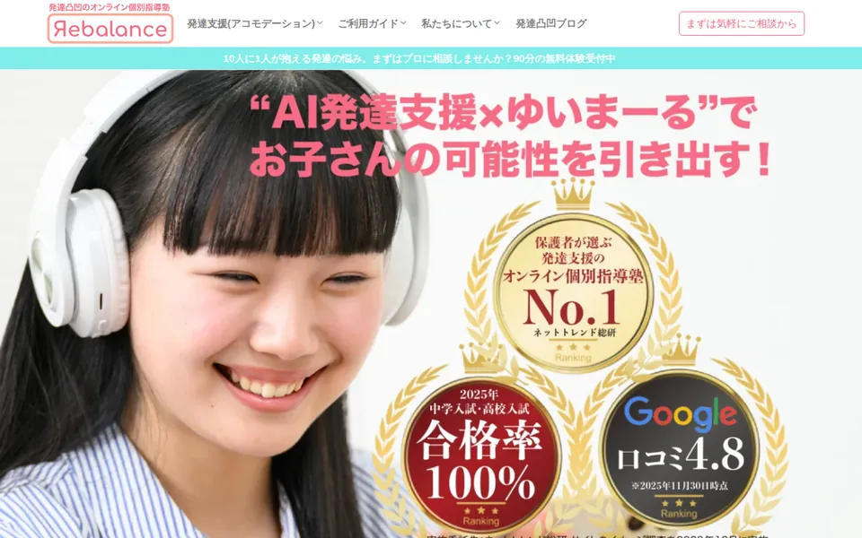
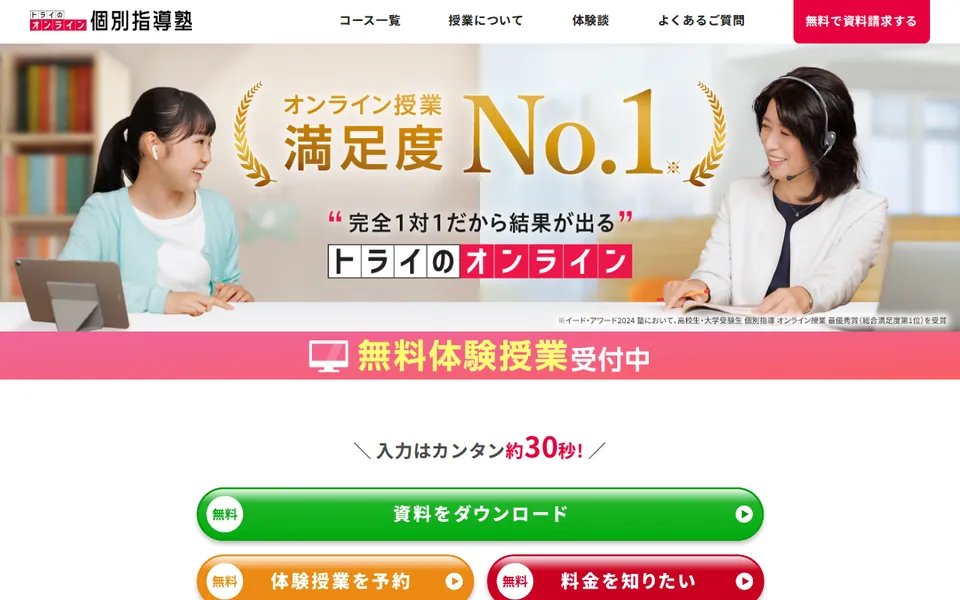
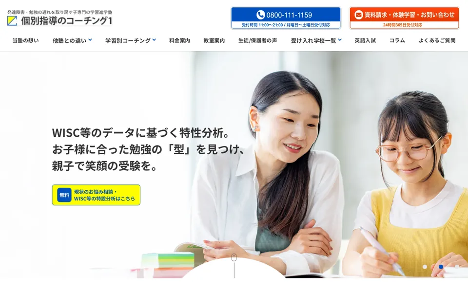
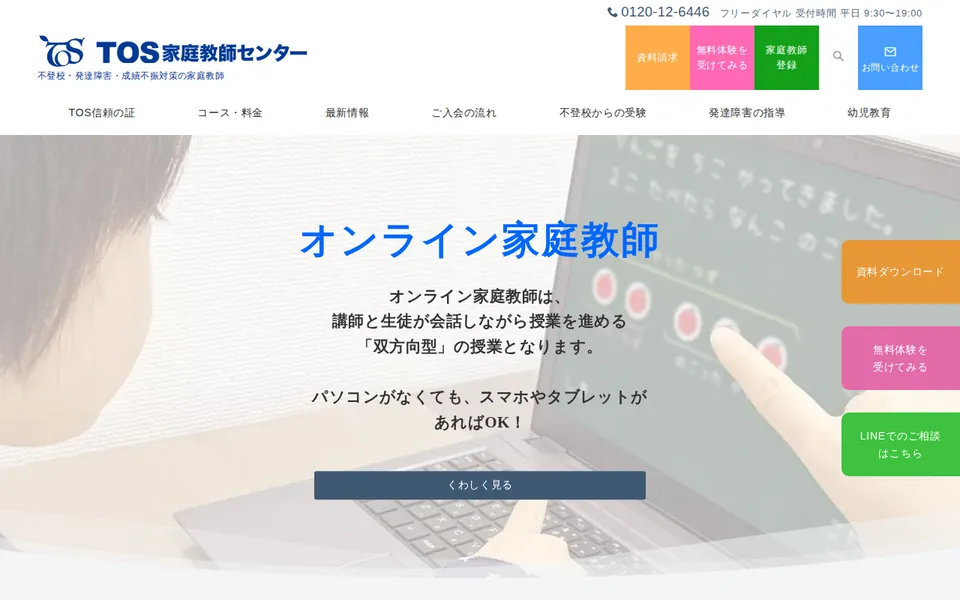
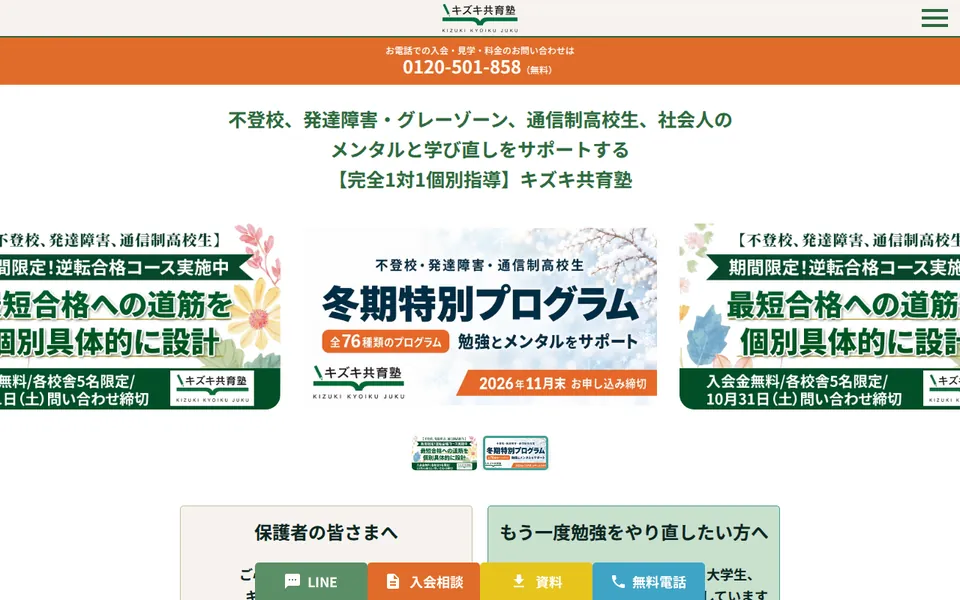

【最新】
発達障害・グレーゾーンの子に合うオンライン家庭教師ランキングTOP3




PR本ページは
家庭教師も気になるけど、子どもが知らない先生といきなり話すのを嫌がりそうで。
発達特性に強いオンライン家庭教師
ランキングTOP3
まずは相談から始めて、
お子さんに合う先生を探してみませんか？
1位ソウガクの料金プラン｜目的別の例
横にスクロールできます
※月4回・税込。入会金22,000円は別途（キャンペーンで無料の場合あり）。写真はイメージです。
6社を17項目で比較
先生・体験・授業の長さ・報告・費用や契約まで、各社の公式サイトに書かれていることを並べました。1位のソウガクは17項目のうち14項目で◎です。
無料体験の記号：◎＝入会後に担当する先生と試せる／○＝子どもが体験授業を受けられる／△＝相談・見学だけ
| サービス | 無料体験 | 編集部のひとこと | 公式 |
|---|---|---|---|
| 1ソウガク★★★★★総合評価 4.9 | ◎担当予定の先生と2回25分か50分。1回目は親の面談にもできる | サービス全体が発達障害・グレーゾーン専門。先生は全員、専門機関の研修を受けた社会人。担当予定の先生と2回の無料体験で相性を確かめられる。
| 公式 |
| 2リバランス★★★★☆総合評価 4.0 | ○体験授業あり約90分。担当者の記載なし | LD・ADHD・ASD・グレーゾーン・2E専門。授業後は毎回フィードバック。授業は60分から。
| 公式 |
| 3トライ★★★★☆総合評価 4.0 | ○体験授業あり英語か数学。担当者の記載なし | 正社員の教育プランナーが専任でつき、WISC検査の結果をもとに学習計画を立てる。
| 公式 |
| 4 | ○体験授業あり約120分。教務スタッフが担当 | 発達障害・グレーゾーン専門。臨床心理士の発達検査と受験対策が特徴。オンラインは60分から。
| 公式 |
| 5TOS★★★★☆総合評価 3.9 | ◎担当予定の先生と1回40分〜1時間。オンラインは要確認 | 実際に担当する先生の無料体験。WISCなどの発達検査を自宅で受けられる（有料）。オンラインは60分から。
| 公式 |
| 6 | △体験授業なし入会相談・見学のみ | 不登校・発達障害の子の学び直しと受験。授業は50分から。常設の無料体験はない。
| 公式 |
横にスクロールできます
| 項目 | 1位 ソウガク | 2位 リバランス | 3位 トライ | 4位 コーチング1 | 5位 TOS | 6位 キズキ |
|---|---|---|---|---|---|---|
| 専門の範囲 | ◎発達障害・グレーゾーン専門 | ◎LD・ADHD・ASD・グレーゾーン・ギフテッド（2E）専門 | ○オンライン個別指導塾のコースの一つ（発達特性サポートコース） | ◎発達障害・グレーゾーン専門の学習進学塾 | ○不登校・発達障害・成績不振対策の家庭教師 | ○不登校・発達障害・グレーゾーン・中退・社会人の学び直し |
| 専門家の関わり | ◎専門機関（発達凸凹アソシエーション）が講師研修・アセスメントシート・教材アドバイス | ○臨床心理士との連携、日本LD学会の機関会員。体験では発達検査の結果も読み解く | ○正社員の教育プランナーが家庭ごとに付く | ◎提携する臨床心理士の発達検査を受けられる | ○専門スタッフの発達検査、臨床心理士などのカウンセリング（いずれも有料） | △メンターがアセスメントで特性を一緒に確かめる（専門家の関わりの記載なし） |
| 先生 | ◎全員が社会人で、専門機関の研修を受講。臨床心理士・作業療法士などの資格者も在籍 | ◎プロ講師（社会人・有資格の学生）と、同じ学科研修・技能研修を終えたセミプロ講師 | ○個性別支援の認定教師から選ぶ。全員が研修を受講 | ○発達指導の講師は独自の研修を受けて担当（チーム制） | ○大学生・社会人・プロから選定。発達障害児指導の勉強会・資格講座を開催 | ○面談をもとに講師を選定。プロ講師や「特性×学び」に特化した専門講師のコースあり |
| 指導計画 | ◎専門家が開発したアセスメントシートで一人ずつ作成。体験後に受け取れる | ◎体験後に個別指導計画書（IEP）をメールで共有。入会しなくても受け取れる | ◎教育プランナーが専用カリキュラムを作成。WISC検査の結果をもとにサポート | ◎WISCなどのデータで特性を分析して学習計画 | ○希望を聞いて先生を選び、体験で先生が目標と方針を確認 | ○入会アセスメントに合わせて講師を提案。メンターと学習計画をつくる |
| 診断・手帳 | ◎診断は不要。診断名の申告・手帳の提出も不要と明記 | ◎確定診断のないグレーゾーンの子のほうが多いと記載。検査なしでも指導できる | ○発達障害・学習障害があっても入会できる（要否の明記なし） | ○診断・発達検査がなくても指導すると記載 | －要否の記載なし | ○グレーゾーンも対象と記載（要否の明記なし） |
横にスクロールできます
| 項目 | 1位 ソウガク | 2位 リバランス | 3位 トライ | 4位 コーチング1 | 5位 TOS | 6位 キズキ |
|---|---|---|---|---|---|---|
| 最短の授業 | ◎小学生25分・中高生35分 | △1回60分から | △料金例は1コマ60分（最短の明記なし） | △オンラインは1回60分から | △オンラインは1回60分から | ○1回50分 |
| 体験を担当する人 | ◎入会後に担当する予定の先生 | △記載なし（体験のあとに合う先生を選ぶ） | △記載なし（事前の学習面談は教育プランナー） | △担当教務（スタッフ） | ◎実際に担当する家庭教師（オンラインでも同じかは要確認） | －常設の体験授業なし（期間限定の場合あり） |
| 体験の回数・時間 | ◎2回。小学生25分か50分（中高生35分か60分）。1回目を保護者面談にもできる | ○約90分（聞き取り30分・模擬授業30分・提案30分） | ○体験授業（英語か数学。約30分・約60分とページで記載が異なる）＋無料の学習面談 | ○体験授業と学習カウンセリングで約120分（オンラインも可） | ○面談を含めて40分〜1時間（体験授業は20〜30分） | △無料の入会相談・見学のみ（保護者だけの相談もできる） |
| 授業の報告 | ◎毎回、アプリで指導報告。状況と対策も定期的にフィードバック | ◎授業後に毎回フィードバック（5分程度） | ◎アプリで授業ごとの進み具合と先生のコメント | ◎毎回、指導報告書 | △先生は月1回センターへ報告（保護者への報告の頻度は記載なし） | －毎回の報告の記載なし |
| 保護者の相談 | ◎先生・本部にチャット。定期的な保護者面談、保護者向け勉強会、家での学習環境のアドバイス | ◎教務に相談、無料の定期面談。AIのペアレントトレーニングもある | ◎教育プランナーが定期面談。電話・LINEでも相談 | ○授業以外も教務部に相談できる | ○センターで随時学習相談。カウンセリングは有料 | ○おやサポメンター（月1回30分）で教務から学習状況を聞ける |
| 時間の融通 | ○土日・夜21時〜・午前も可。回数・時間は月ごとに変更、同じ月内で振替 | ○前日までの連絡で振替。難しければ翌月以降に繰り越し | ◎日程は自由。前日22時までの連絡で無料振替。回数・科目・時間はいつでも変更 | △振替あり。オンライン指導は翌月以降への振替不可 | ○土日・遅い時間も相談できる。テスト前は回数を増やせる | ○前日までの連絡で無料変更・振替。21時まで授業 |
| 学校に行きづらい子 | ○午前中の授業に対応 | ○不登校でも指導できると記載 | ◎不登校サポートコース。在籍校で出席と認められた実績あり | ○不登校コーチングあり | ◎不登校からの受験・高認に対応 | ◎不登校の学び直しが中心。出席扱いの相談もできる |
横にスクロールできます
| 項目 | 1位 ソウガク | 2位 リバランス | 3位 トライ | 4位 コーチング1 | 5位 TOS | 6位 キズキ |
|---|---|---|---|---|---|---|
| 小学生の料金 | ◎25分×月4回 13,200円（税込）。6社で月額の目安がいちばん低い | △60分×月4回 22,000円〜（税込・セミプロ講師） | ○60分×月4回 14,960円〜（税込） | △オンライン60分×月4回 25,300円（税込） | ○オンライン60分×月4回 19,400円（税込） | －要確認。小学生の金額は記載なし（50分×月4回24,200円〜の記載、中3の例は30,800円〜） |
| 入会金 | ○22,000円（税込）。キャンペーンで無料の場合あり | ○19,800円（税込）。別に年間管理費26,400円 | ○11,000円（税込） | ○18,700円（税込）。別に年会費26,400円 | △33,000円（税込） | △16,500円＋事務手数料5,500円＋選抜費11,000円〜 |
| 教材費 | ◎購入不要。専門家の推奨教材リストから選ぶ。学習ツール（映像授業2,000本など）も追加費用なし | ◎指定教材は原則なし。学校のテキスト中心 | ◎教材費無料。年会費・登録料・更新費なし | ◎教材費・ファイル代などはかからない | ◎テキスト代・手数料・管理費などの追加費用なし | ○市販の参考書や手持ちの教材を使う（家庭で用意） |
| 解約・違約金 | ◎違約金・途中解約料0円、契約期間の縛りなし、月単位で休会・退会。初めての家庭は授業料1か月分の全額返金保証 | ○前月末までの申し出で中途解約金なし（即時解約は月謝1か月分か2万円の低い方） | ○前月までの申し出で解約金なし。8日以内はクーリングオフ | △前月末までの申し出で中途解約金なし。契約期間は1年で自動更新 | ○解約金・違約金なし。退会は1か月以上前に連絡、最低1か月・6時間 | ○入会8日以内のキャンセルは全額返金。休会・退会は前々月末までに申請（規約） |
| 先生の交代 | ◎何度でも無料。性別の希望も伝えられる。担任制で毎回同じ先生 | －交代の決まりは記載なし（担当制で原則同じ講師） | ◎何度でも無料。教科ごとに選んでも追加費用なし | －交代の決まりは記載なし（チーム制で講師の入れ替わりあり） | ◎何回でも無料 | ◎講師・科目の変更は無料 |
※◎＝特に手厚い、○＝ある、△＝限られる、－＝記載なし。各社公式サイトの記載をもとにした当サイトの判断です（2026年10月17日確認・採点基準）。
比較17項目のうち14項目で◎
無料体験を公式で見るひと目でわかる6社の位置
- ✔ 担当予定の先生と体験2回
- ✔ 全員が研修を受けた社会人講師
※縦・横は当サイトの採点です（採点基準）。
ソウガクの無料体験2回で
先生との相性を確かめましょう！
担当予定の先生と、2回試してから決められる
体験の流れを見る- 1回目は保護者と先生の面談にもできる！
体験では、入会後に受け持つ予定の先生が教えます。子どもの様子や苦手なことを先に伝えてから、2回目に授業を受けられます。 - 小学生は25分か50分！
中高生は35分か60分。最初に流れを説明して、できることから始めます。 - 体験後に指導計画がもらえる
得意・不得意をまとめた、その子だけの指導計画を受け取れます。相性が合えば、そのまま同じ先生が担当します。無理な入会の勧誘や教材の販売もありません（公式）。 - それでも合わなければ全額返金
初めて利用する家庭は、初回の授業日から30日以内に連絡すれば、1か月分の授業料が全額戻ります（入会金は対象外。小学生25分・50分、中高生35分・60分の月4回までのコース）。
体験は2回とも無料
無料体験を公式で見る発達特性に強いオンライン家庭教師
おすすめランキング
先生との相性は、体験してみないと分かりません。ソウガクは入会後に担当する予定の先生と2回体験できるので、まずはそこで確かめるのがおすすめです。
1ソウガク
発達特性を学んだ社会人講師。授業は小学生25分から！
担当予定の先生と無料体験2回

担当予定の先生と無料体験2回
無料体験を公式で見る特徴
- 先生は全員専門機関の研修を受けた社会人講師
- 専門家が開発したアセスメントシートで、一人ずつ指導計画を作る
- 授業は小学生25分から（中高生は35分から）
- 無料体験は2回。入会後に担当する予定の先生が担当
- 授業のたびにアプリで指導報告。先生・本部にチャットで相談
- 違約金・途中解約料0円。契約期間の縛りなし
- 担任制で毎回同じ先生。手元をスマホで映せば、書けているかも先生が確認
- 合わなければ授業料1か月分を全額返金（初回の授業から30日以内）
- 対象：小学生〜高校生
| 料金の目安 | 対応学年 |
|---|---|
| 月13,200円〜小学生25分×月4回・税込。別途入会金22,000円（キャンペーンで無料の場合あり） | 小学生〜高校生全国・オンライン（Zoom） |
| 1回の授業 | 先生 |
| 小学生25分・50分・75分 中高生35分・60分・75分 | 全員が専門機関の研修を受けた社会人講師 |
| 保護者サポート | 無料体験 |
| 毎回の指導報告・先生・本部とチャット・定期的な保護者面談・保護者向け勉強会 | 2回。担当予定の先生が担当（1回目は保護者面談にもできる） |
編集部のイチオシポイント
ソウガクは、サービス全体が発達障害・グレーゾーン専門です。先生は全員が社会人で、発達支援の専門機関「発達凸凹アソシエーション」の研修を受けています。臨床心理士や作業療法士、放課後等デイサービスで働いた経験のある先生も在籍しています。入会後に担当する予定の先生の無料体験を、2回まで受けてから決められると公式に明記しているのは、比較した6社の中でソウガクだけでした※1。授業は小学生なら25分から選べて、違約金や途中解約料もかかりません。初めて利用する家庭には、授業料1か月分の全額返金保証もあります。「長い授業は続かないかも」「先生との相性が心配」という家庭が、最初に試しやすいサービスです。
※1 各社公式サイトの無料体験の説明による。TOSは1回・訪問の説明
ソウガクの口コミ
 小学4年生・ADHDの診断ありの保護者
小学4年生・ADHDの診断ありの保護者学校へ行ける日が減り、家で勉強を見ると親子で言い合いになっていた。週1回オンラインで学ぶ習慣ができ、「ずっと自分が見なければ」という負担が軽くなった。
※ソウガク公式サイト掲載の声を要約。個人の感想です。
こちら
合わなければ授業料1か月分を全額返金
無料体験を公式で見る2オンライン個別指導塾リバランス
発達障害・ギフテッド専門のオンライン個別指導
約90分の無料体験で、個別指導計画書を提案

体験だけでも個別指導計画書がもらえる
無料体験学習を公式で見る特徴
- LD・ADHD・ASD・グレーゾーン・ギフテッド（2E）専門。完全1対1のライブ授業
- 約90分の無料体験のあと、個別指導計画書（IEP）をメールで受け取れる
- 学生の先生も、プロ講師と同じ学科研修・技能研修を終えた「セミプロ講師」
- 授業後に毎回フィードバック。授業以外も教務に相談できる
- 対象：小学1年生〜中学3年生
| 料金の目安 | 対応学年 |
|---|---|
| 60分×月4回 22,000円〜税込（セミプロ講師）。プロ講師は28,600円〜。別途入会金19,800円・年間管理費26,400円 | 小学1年生〜中学3年生全国・海外からオンライン |
| 1回の授業 | 先生 |
| 60分〜回数・時間はプランで相談 | プロ講師（社会人・有資格の学生）と、同じ研修を終えたセミプロ講師（学生） |
| 保護者サポート | 無料体験 |
| 毎回のフィードバック・教務への相談・無料の定期面談 | 約90分のオンライン体験（聞き取り・模擬授業・指導方針の提案） |
編集部のイチオシポイント
リバランスは、LD・ADHD・ASD・グレーゾーン・ギフテッド（2E）専門のオンライン個別指導塾です。学習内容のレベルは下げずに、伝え方や答え方を工夫する「アコモデーション」を方針にしています。約90分の無料体験では、聞き取りと模擬授業のあとに個別指導計画書（IEP）が提案され、入会しなくても受け取れます。授業は60分からで料金も高めですが、中学受験・高校受験まで特性に合わせて相談したい家庭に向いています。
リバランスの口コミ
- 会員の保護者（公式サイト掲載のGoogleの口コミ）
勉強が大嫌いだった子が、数か月で難しい問題にも挑戦できるようになった。授業に本人の興味のあることを取り入れてくれて、親にも毎回フィードバックをくれる。
※リバランス公式サイト掲載の声を要約。個人の感想です。
こちら
体験だけでも個別指導計画書がもらえる
無料体験学習を公式で見る3トライのオンライン個別指導塾
発達特性サポートコースあり
WISC検査の結果をもとに学習をサポート

教育プランナーが専任でつく
無料の学習面談を公式で見る特徴
- 教師とは別に、正社員の教育プランナーが専任でつく
- WISC検査の結果をもとに、得意を伸ばし苦手をカバー
- 保護者の同席・カメラオフでの受講もできる
- 学習管理アプリで、毎回の授業の進捗が見える
- 対象：小学生〜高校生
| 料金の目安 | 対応学年 |
|---|---|
| 小学生 60分×月4回 14,960円〜税込。別途入会金11,000円 | 小学生〜高校生高卒生も相談可 |
| 1回の授業 | 先生 |
| 1コマ60分（料金例）時間・回数・教科は変更できる | 登録教師33万人（2024年3月時点・公式）から選ぶ。専任制で原則同じ先生 |
| 保護者サポート | 無料体験 |
| 教育プランナーの定期面談・電話・LINE、学習管理アプリ | 無料の学習面談と、体験授業（英語か数学。約30分と約60分の両方の記載あり） |
編集部のイチオシポイント
トライのオンライン個別指導塾には発達特性サポートコースがあり、WISC検査の結果をもとに学習を組み立てます。教師とは別に正社員の教育プランナーが専任でつき、定期的な面談や電話・LINEで相談できます。検査結果をどう勉強に活かせばいいか迷っている家庭に向いています。
こちら
学習面談は入会しなくても受けられる
無料の学習面談を公式で見る4個別指導のコーチング1
発達障害・グレーゾーン専門の学習進学塾
オンライン指導は全国対応、受験にも対応

発達特性のある子の受験に対応
無料体験を公式で見る特徴
- 提携する臨床心理士の発達検査を受けられる
- 発達特性のある子の中学受験・高校受験に対応
- 発達指導の講師は独自の研修を受けて担当。毎回の指導報告書
- 授業以外のことも教務部に相談できる
- 対象：年長〜高校3年生
| 料金の目安 | 対応学年 |
|---|---|
| オンライン 60分×月4回 25,300円税込。別途入会金18,700円・年会費26,400円 | 年長〜高校3年生オンラインは全国・海外から |
| 1回の授業 | 先生 |
| 60分・90分・120分月4回か月8回 | 独自の研修を受けた講師（チーム制） |
| 保護者サポート | 無料体験 |
| 毎回の指導報告書・教務部に相談 | 体験授業と学習カウンセリング（担当教務と約120分。オンラインも可） |
編集部のイチオシポイント
コーチング1は、発達障害・グレーゾーンの子のための学習進学塾です。教室のほかにオンライン指導があり、全国から受けられます。提携する臨床心理士の発達検査を受けられること、発達特性のある子の中学受験・高校受験に対応していることが特徴です。オンラインは60分×月4回で25,300円（税込）からで、別に入会金と年会費がかかりますが、受験まで見据えて専門の塾に任せたい家庭には候補になります。
コーチング1の口コミ
- ADHDの子の保護者（公式サイト掲載）
担当の教務スタッフが、子どもにできることとできないことを見極めて学習プランを立ててくれた。子どもに無理をさせずに勉強させられるようになり、親の負担も軽くなった。
※コーチング1公式サイト掲載の声を要約。個人の感想です。
こちら
無料の体験学習・学習カウンセリングあり
無料体験を公式で見る5TOS家庭教師センター
不登校・発達障害・成績不振対策の家庭教師
無料体験は実際に担当する先生が担当

実際に担当する先生と無料体験
無料体験を公式で見る特徴
- 無料体験は実際に担当する家庭教師が担当（面談を含めて40分〜1時間）
- 専門スタッフによるWISC・田中ビネーなどの発達検査を自宅で受けられる（有料）
- 臨床心理士などのカウンセラーによる心理カウンセリング（有料・オンライン可）
- 解約金・違約金なし。先生の交代は何回でも無料
- 対象：幼児〜社会人
| 料金の目安 | 対応学年 |
|---|---|
| オンライン 60分×月4回 19,400円税込（幼児〜中学3年生）。別途入会金33,000円 | 幼児〜社会人オンラインの対象地域は公式に記載なし |
| 1回の授業 | 先生 |
| オンラインは60分か90分月4回か月8回 | 大学生・社会人・プロの登録教師から選定。発達障害児指導の勉強会を開催 |
| 保護者サポート | 無料体験 |
| センターで随時学習相談。先生は月1回センターへ報告 | 実際に担当する先生による体験（面談を含めて40分〜1時間） |
編集部のイチオシポイント
TOS家庭教師センターは、不登校・発達障害・成績不振対策を掲げる家庭教師センターで、オンラインコースもあります。無料体験は実際に担当する家庭教師が行い、気に入ってから入会を決められます。専門スタッフによる発達検査や、臨床心理士などのカウンセリング（どちらも有料）も受けられます。ただし体験の説明は訪問を前提にした書き方なので、オンラインでも同じ形で体験できるかは申し込み時に確認してください。
こちら
体験の前に入会金はかからない
無料体験を公式で見る6キズキ共育塾
不登校・発達障害・グレーゾーンの学び直しを支える
完全1対1の個別指導（オンライン校あり）

保護者だけの相談・見学もできる
無料の入会相談を公式で見る特徴
- 不登校・発達障害・グレーゾーンの子の学び直しと受験を、完全1対1で
- 授業とは別に、学習計画や特性を一緒に考えるメンターサポート
- 保護者向けの「おやサポメンター」（月1回30分）で、教務から学習状況を聞ける
- 顔を見せるのが苦手なら、音声とチャットだけで授業を受けられる
- 対象：小学生〜社会人
| 料金の目安 | 対応学年 |
|---|---|
| 50分×月4回 24,200円〜税込。学年ごとの金額は記載なし（中学3年生の例は30,800円〜）。別途入会金16,500円ほか | 小学生〜社会人オンライン校は全国・海外から |
| 1回の授業 | 先生 |
| 50分か80分1科目につき月4コマ | 面談の内容をもとに講師を選定。プロ講師のコースあり |
| 保護者サポート | 無料体験 |
| おやサポメンター（月1回30分）・保護者だけの相談 | 常設の体験授業はなし（期間限定の場合あり）。無料の入会相談・見学 |
編集部のイチオシポイント
キズキ共育塾は、不登校・発達障害・グレーゾーンの子や、中退・社会人の学び直しを支える完全1対1の個別指導塾です。オンライン校なら全国から受けられ、顔を見せるのが苦手な子は音声とチャットだけで授業を受けることもできます。授業とは別に、学習計画や特性を一緒に考えるメンターサポートがあります。常設の無料体験授業はありませんが、保護者だけの相談や見学ができるので、学校に行きづらい状態からの学び直しを考えている家庭に向いています。
キズキの口コミ
- ASDのある子の保護者（公式サイト掲載）
入塾前の見学や面談で、子どもの特性を理解してもらえると思えた。宿題の量も講師と子どもが相談して決めてくれるので、自分から取り組めている。
※キズキ公式サイト掲載の声を要約。個人の感想です。
こちら
保護者だけの相談・見学もできる
無料の入会相談を公式で見る迷ったらまずは
ソウガクの無料体験から！
ソウガク
発達特性を学んだ社会人講師が担当し、授業は小学生25分・中高生35分から選べます。担当予定の先生と2回試してから決められ、合わなければ授業料1か月分の全額返金保証もあります。違約金・途中解約料は0円です。
合わなければ先生の交代も無料
無料体験を公式で見る
※公式サイトの記載をもとにした目安です。入力内容は送信・保存しません。